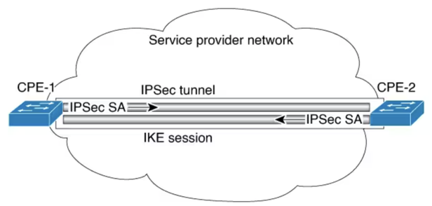

IPsec implements network layer encryption and authentication, embedding end-to-end security within the network architecture. The advantage to this is that individual applications do not need to be modified to take advantage of strong security. All packets routed through the network are automatically secured.
IPsec provides secure tunnels between two peers, such as two switches. You define which packets are considered sensitive and should be sent through these secure tunnels. You define the parameters which should be used to protect these sensitive packets, by specifying characteristics of these tunnels. Marked packets are locally redirected to the tunnel interface as shown in the following image.

More accurately, tunnels are sets of security associations (SAs) that are established between two IPsec peers. The security associations define which protocols and algorithms should be applied to sensitive packets, and also specify the keying material to be used by the two peers. Security associations are unidirectional and are established per security protocol.
Once established, the set of security associations (outbound, to the peer) is then applied to the triggering packet as well as to subsequent applicable packets as those packets exit the device. Applicable packets are packets that match the same criteria that the original packet matched. For example, all applicable packets could be encrypted before being forwarded to the remote peer. The corresponding inbound security associations are used when processing the incoming traffic from that peer.
If no security association exists that IPsec can use to protect this traffic to the peer, IPsec uses the Internet Key Exchange protocol (IKE) to negotiate with the remote peer to set up the necessary IPsec security associations on behalf of the data flow.
If IKE is used to establish the security associations, the security associations will have lifetimes set so that they periodically expire and require renegotiation, thus providing an additional level of security.
A transform set is an acceptable combination of security protocols, algorithms, and other settings to apply to IPsec protected traffic. During the IPsec security association negotiation, the peers agree to use a particular transform set when protecting a particular data flow.